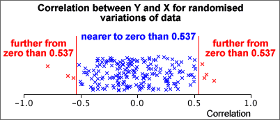

Another example using randomisation
Randomisation can be used to assess whether two variables are uncorrelated.
| Variable | |
|---|---|
| Y | X |
| 65 60 58 57 55 49 46 43 42 40 39 37 36 |
63 62 41 41 50 51 51 34 32 45 36 41 53 |
Are the variables uncorrelated in the underlying population?
Randomisation
If Y and X were unrelated, any permutation of the values of X would have been equally likely, so we can generate random variations of the data by shuffling the values of X between the individuals.
The correlation between Y and X in the data was 0.537. To assess whether such a large correlation could have arisen if Y and X were unrelated, we can use randomisations to investigate the distribution of the correlation coefficient when they are unrelated. The diagram below shows the correlation coefficients from 200 randomisations of the data.

Since there would only be a 7/200 = 3.5% chance of a sample correlation being as far from zero as that observed, we can conclude that:
There is moderately strong evidence that there is a real relationship between Y and X (in the underlying population).